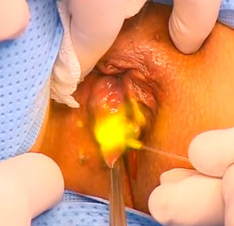

Геморрой – заболевание прямой кишки связанное с венозным застоем в области таза. На ранних стадиях обычно не многие обращаются к врачу, потому что мешает чувство стыда. Когда дело доходит до второй или третьей стадии, безоперационные методы становятся менее эффективными и требуется оперативное вмешательство. Пациенты должны понимать, что хирург не лечит геморрой, а лишь устраняет его последствия. Поэтому ни один адекватный и честный врач не станет гарантировать вам устойчивый результат операции на всю оставшуюся жизнь. Среди малоинвазивных методов удаления геморроя наиболее распространенными являются инфракрасная и лазерная коагуляция. В обоих случаях происходит температурное воздействие на ткани, в результате чего происходит их разрушение или трансформация. Разница лишь в концентрации тепловой мощности.
Сначала пациенту необходимо сдать анализы (кровь, моча) и в некоторых случаях проверить состояние сердца (ЭКГ) и легких. Анестезиолог должен быть уверен, что у вас не будет осложнений во время и после наркоза. Перед началом процедуры делается клизма для очищения прямой кишки. Анестезия может быть местная, спинальная либо общая. В зависимости от величины и локализации геморроидальных узлов применяют как внешнее их отсечение лазером, так и воздействие высокотемпературного излучения на внутреннюю часть кавернозных образований. Последний вариант менее болезненный и щадящий. Мощное лазерное или инфракрасное излучение выпаривает жидкость из ткани и происходит её перерождение в соединительную с уменьшением объема.
Продолжительность процедуры около 10-25 минут. Период восстановления очень сильно зависит от степени вмешательства, а также от индивидуальных особенностей организма пациента. Может колебаться от 5 до 20 дней до момента возвращения к полноценной жизни и трудоспособности. Несколько дней после операции пациенты употребляют обезболивающие препараты, и в случае необходимости наносят наружно пантенол для ускорения процесса заживления ран. Один из вариантов лечения геморроя лазером вы можете посмотреть в следующем видео.
По сравнению с геморроидэктомией по Миллигану-Моргану, операция лазером имеет следующие преимущества:
Среди недостатков этой процедуры можно выделить более высокую стоимость и отсутствие 100% гарантий того, что через несколько лет у вас снова не появятся геморроидальные узлы.
Лазерное лечение геморроя применяют на 2 или 3 стадии заболевания, реже на четвертой.
После перенесенной операции по удалению геморроя необходимо придерживаться диеты, которая уменьшит вероятность возникновения запоров. Употребляйте больше овощей, фруктов, продуктов содержащих клетчатку. Исключайте из рациона белый хлеб, яйца, рис, манку, острые приправы и блюда. Ограничивайте себя в мясной пище. В клиниках и больницах обычно в данной ситуации назначают диету №3.